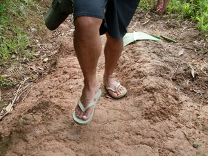

sikal 
/sikal/
v_rt.
“stand_flatfooted”
n.
a stride
Wrd.Gloss: stride
Sabeka ne sikal niyu daruwa ne sikal ney.
One of your(pl) strides is two of our strides.
Eng. stride; step
Online dict status: -
Usage level: M
vi.
for someone (egsikal, migsikal/insikal, sikal, agent, eg><ø-) to take a step forward,to stand flat-footed. i.e., both heels and toes on the ground
Wrd.Gloss: flat_footed
Egsikal ad perem piru due uled diyè te kewun-aan ku, sikan naa ka nakalibed a.
I was about to step but there was a snake ahead of me, so then I returned.
Ant. egkingking
Syn. eggipanew
Ant. eglangkad
Eng. step forward; flat footed; level; stride
Online dict status: -
Usage level: R
Updated by: RJH,AAA,TME,NJK,RAA
Last updated: 26/Oct/2009
This page last updated: 19/May/2012
Copyright © 2009-2010, Matigsalug Language Christian Association, Inc